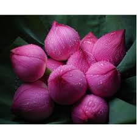

LOTUS

Importance
Lotus (Nelumbo nucifera) symbolizes purity, beauty, majesty, grace, fertility, wealth, richness, knowledge and serenity. The Pink Lotus is the National Flower of India. Nelumbo nucifera is known by a number of common names, including Sacred lotus, Indian lotus and Sacred water-lily.
History of Lotus
Back in Egyptians times, the lotus flower was very important in their religion. Meaning creation and rebirth, it was a symbol of the sun, because at nightfall it closes and goes beneath the water and at dawn it climbs up above the water and reopens. It was the only plant to flower and fruit at the same time, as it would emerge as pure white from the depths of the muddy swamp and grow above the water. One myth that revolves around the lotus is during creation time a giant lotus flower grew out of a pond and from it the sun rose. Also, throughout ancient Egypt the lotus has been pictured in various works of art. It would act as a border to outline a section of artwork, or held in the hands of a god or human. The lotus was also used in their math, helping to count to high decrees. One lotus would act as 1,000 and two lotus as 2,000 and so on.
Propagation
The pink or white flowered Chinese lotus (Nelumbo nucifera) and the yellow-blooming American lotus (Nelumbo pentapetula) are aquatic plants prized as specimens in water gardens. Their underground stem is edible and the dried seed heads of the lotus are utilized in floral arrangements. Lotus plants are propagated vegetatively by dividing the underground stem, which ensures the preservation of desirable parent plant characteristics, or by seed.
Availability
Lotuses are found in white and pink colors in general and they grow in shallow and murky waters. Lotus flowers enjoy warm sunlight and are intolerant to cold weather. This is why the Lotus is not seen blossoming in the winter. The floating leaves and Lotus flowers have long stems, which contain air spaces to maintain the buoyancy. The Lotus is native to Asia and flourishes in a wide range of climates from India to China.
The Lotus plant is an aquatic perennial, native to southern Asia and Australia and most commonly cultivated in water gardens. The plant has its roots firmly in the mud and sends out long stems to which their leaves are attached. The leaves are sometimes, and Lotus flowers always, raised above the water surface. The beautiful and fragrant Lotus flower opens in the morning and petals fall in the afternoon.
Facts about Lotus
- The Lotus is a sacred flower for Buddhists.
- The Lotus flower is quoted extensively in Puranic and Vedic literature.
- The Lotus is one of the eight auspicious signs of Buddhism - an eight petalled lotus used in Buddhist mandalas symbolizes cosmic harmony, a thousand petalled Lotus, spiritual illumination. A bud symbolizes potential. The well-known Buddhist mantra, "Om mane padme," refers to the jewel in the lotus, enlightenment.
- In Egyptian mythology, the Lotus is associated with the sun, because it bloomed by day and closed by night. The Lotus is even believed to have given birth to the sun.
- The roots of the Lotus are planted in the soil of the pond or river bottom, while the leaves float on top of the water surface. The Lotus flowers are usually found on thick stems rising several centimeters above the water.
- The Lotus flowers, seeds, young leaves and rhizomes are all edible. In Asia, the petals are sometimes used for garnish, while the large leaves are used as a wrap for food.
- Various parts of the sacred Lotus are also used in traditional Asian herbal medicine.
- The Lotus fruits are a conical pod with seeds contained in holes in the pod. Nucifera means having hard fruit. When the seeds are ripe, they become loose in the pod. The pod then tips down towards the water, releasing the seeds.
- The Lotus stem is eaten almost in all parts of India, and pickled too.
Uses
Food
All parts of the lotus flower plant are edible. The flowers are dried and used as seasoning. The stems of the lotus are used in salads. The seeds are roasted or candied and used directly in soups and sauces.
Perfume
According to the Missouri Botanical Gardens, oils from the lotus flower are used in perfumes. The fragrance is said to elicit feelings of euphoria and heightened awareness.
Medicinal
According to the Institute for Traditional Medicine, lotus seeds are beneficial to the spleen, kidney and heart. They can reduce blood pressure and relieve diarrhea. The leaves are beneficial to the stomach and can help improve circulation.
by TaboolaSponsored LinksYou May Like